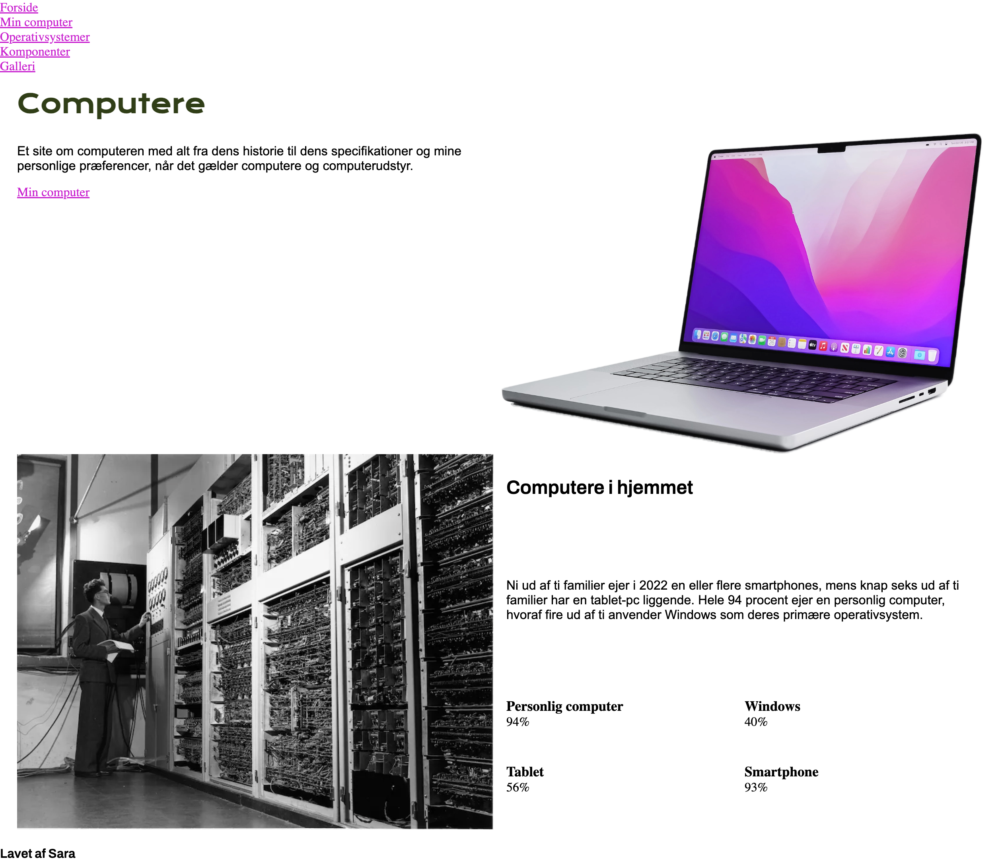
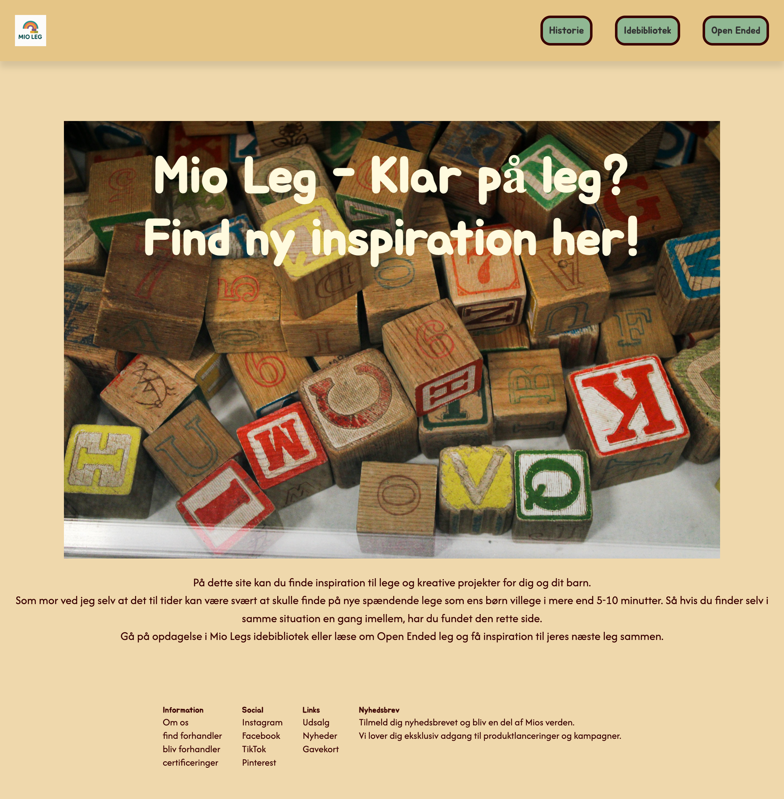
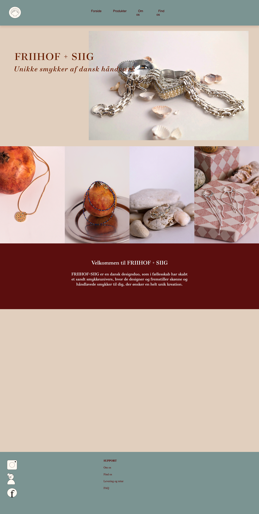

Projekter
Her kan du se et overblik over de ting jeg har lavet mens jeg har gået på multimediedesigner-uddannelsen,
på det
første semester.
Alle projketerne indebærer design, programmering og UX/UI og man kan fornemme for
hvert
projekt, at der bliver bygget mere og mere på.
Her kan du se hvad jeg har lært indtil videre på
uddannelsen.
02

Tema 2 handlede om at blive tryg i VSCode og lære de basale og grundlæggende
redskaber, for at kunne sætte et site op. Intruduktion til HTML struktur, indhold, elementer og CSS.
Arbejde med Figma/Figjam og designteori.
03

Tema 3 handlede om grundlæggemde UX/UI og researchmetoder. Vi skulle skabe vores et
"emnesite", som drejede sig om et emne vi selv synes kunne være spændende at formidle gennem et
website.
Alt fra wireframes og prototyper, tænke-højt-test og lighthousetest lavede jeg på dette forløb.
04

Tema 4 handlede om at få en grundlæggende viden om JavaScript. Vi arbejde i forskellige af Adobes programmer, prøvede kræfter med "pre-made" styletile/wireframes, light/darkmode og forms b.l.a.
05

Tema 5 handlede om at skabe indhold til sit site. Dette indebar b.l.a produktion
af video og fotografi.
Det handlede også om at redesigne en viksomheds website samt indhold, og
arbejde
sammen i teams.